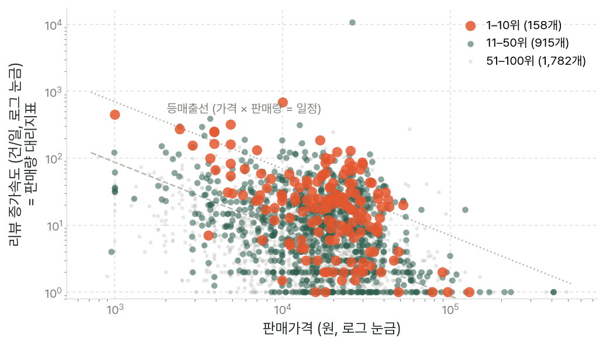
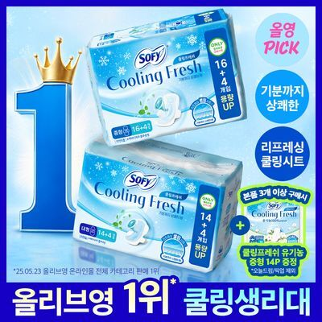
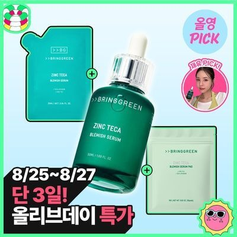
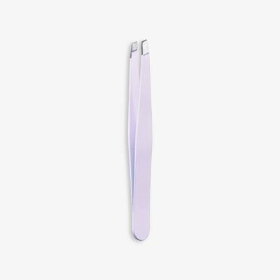
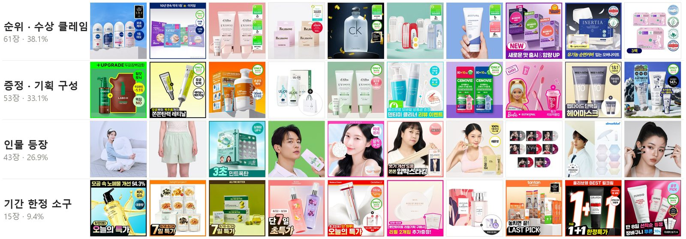

순위를 정하는 것은 무엇인가
올리브영은 랭킹 산정 기준을 공개하지 않는다. 이 분석은 무엇이 순위를 가장 크게 좌우하는지 직접 확인해 보려는 데서 시작했다.
1.1배경 및 문제 제기
올리브영은 국내 헬스앤뷰티(H&B) 시장에서 가장 큰 유통 채널이다. 매장 진열대와 모바일 앱 첫 화면에 걸리는 판매 랭킹은 소비자가 무엇을 살지 고르는 출발점이고, 입점 브랜드는 이 랭킹으로 자사 성과를 가늠한다. 그런데 랭킹을 어떻게 집계하는지, 무엇을 기준으로 순위를 매기는지는 공개되어 있지 않다.
그래서 궁금했다. 올리브영 랭킹을 결정짓는 최우선 요소는 무엇인가. 이 분석은 이 질문 하나에서 출발했다. 후보는 여럿이다. 판매량과 가격, 할인·쿠폰·증정 같은 프로모션, 브랜드의 이름값, 목록에서 가장 먼저 눈에 들어오는 썸네일, 그리고 리뷰가 있다.
후보 가운데 업계에서 가장 자주 거론되는 것은 리뷰다. 누적 리뷰 수가 많을수록 순위가 높다는 믿음이 널리 퍼져 있고, 체험단이나 리뷰 증정 이벤트로 짧은 기간에 리뷰 수를 늘리려는 마케팅도 이 믿음에 기댄다. 리뷰 수는 상품 상세 페이지에서 가장 눈에 띄는 숫자이고 소비자가 신뢰의 근거로 삼는 값이니, 직관적으로는 그럴듯하다.
하지만 이 믿음을 상품 단위 실측 데이터로 확인한 사례는 드물다. 리뷰와 순위가 함께 움직인다는 사실만으로는 리뷰가 순위를 끌어올리는 선행 지표인지, 잘 팔린 결과로 리뷰가 쌓이는 후행 지표인지 가릴 수 없다. 두 경우 모두 데이터에는 양의 상관으로 나타나지만 실무에 주는 의미는 정반대다. 선행 지표라면 리뷰 확보 마케팅이 순위를 올리는 수단이 되고, 후행 지표라면 리뷰 프로모션 예산은 순위를 올리지 못한 채 성과를 확인하는 데만 쓰인 셈이다.
이 분석은 매일 랭킹을 수집하는 파이프라인을 직접 만들어 51일 치 패널 데이터를 쌓고, 랭킹을 좌우할 만한 후보를 하나씩 순위와 대조해 무엇이 가장 크게 작용하는지 가려낸다. 리뷰는 그 후보 가운데 하나로 다룬다.
1.2분석 목적
이 분석의 목적은 올리브영 판매 랭킹을 실제로 결정하는 요인을 상품 단위 시계열 패널 데이터로 찾아내는 것이다. 리뷰·가격·프로모션·브랜드·썸네일을 차례로 순위와 대조하고(5장), 그중 업계 통념이 강하게 자리 잡은 리뷰와 썸네일은 아래 4개 가설로 따로 세워 검증했다. 리뷰와 랭킹 가운데 무엇이 먼저 움직이는지(선행 vs 후행)는 분석 도중 생긴 질문이며, 5.9절에서 다룬다.
리뷰 증가 속도는 랭킹 상승을 견인하는 핵심 선행 지표인가?
리뷰 증가 속도와 순위의 관계를 측정하고, 시차를 두어 양방향의 선후를 판별한다.
대가성(체험단) 리뷰 비중이 높은 상품이 랭킹에서 우위를 갖는가?
리뷰 본문의 대가성 공시 문구를 탐지해 상품·브랜드별 비중을 산출한 후 순위와 대조한다.
리뷰 총량과 평균 별점 중 랭킹을 더 잘 설명하는 지표는 무엇인가?
두 변수의 설명력을 분해해 증분 기여도를 비교한다.
썸네일의 시각적 구성이 상위 랭킹과 유의미한 상관관계를 가지는가?
썸네일의 밝기·채도·구성 복잡도 등을 수치화하고 판매 요인 통제 전후로 대조한다.
| 구분 | 연구 가설 | 검증 방법 |
|---|---|---|
| 가설 1 | 리뷰 증가 속도와 판매 랭킹 간 선행 관계 검증 | 리뷰 증가 속도와 순위의 관계를 측정하고, 시차를 두어 양방향의 선후를 판별 |
| 가설 2 | 대가성(체험단) 리뷰 비중과 랭킹의 상관관계 분석 | 리뷰 본문의 대가성 공시 문구를 탐지해 상품·브랜드별 비중을 산출 후 순위와 대조 |
| 가설 3 | 리뷰 총량과 평균 별점의 랭킹 설명력 비교 | 두 변수의 설명력을 분해해 증분 기여도를 비교 |
| 가설 4 | 썸네일 시각 구성 요소와 랭킹 간 연관성 검증 | 썸네일의 밝기·채도·구성 복잡도 등을 수치화하고 판매 요인 통제 전후로 대조 |
표 1. 분석 가설과 검증 방법
1.3데이터 수집 원칙 및 준수 사항
이 프로젝트는 상업적 목적이 없는 개인 데이터 분석 프로젝트다. 수집한 원본 데이터는 제3자에게 팔거나 재배포하지 않고 통계 분석에만 쓴다. 개인식별정보는 수집하지 않았으며, 리뷰 작성자 정보는 웹 페이지에 공개된 표시명까지만 담았다.
올리브영의 크롤링 정책(robots.txt)은 검색엔진과 공인 AI 크롤러 13종에 한해, 요청 사이에 5초 간격을 두는 조건으로 랭킹 페이지 접근을 허용한다. 그 밖의 도구는 원칙적으로 제한한다.
4개 영역, 51일간의 일간 패널
공개 API가 없어 웹·모바일 클라이언트가 쓰는 네트워크 엔드포인트를 역설계했고, 이를 통해 랭킹·리뷰 통계·리뷰 본문·대표 이미지를 매일 모았다.
2.1데이터 수집 대상
올리브영은 공개 API를 제공하지 않는다. 그래서 웹과 모바일 클라이언트가 쓰는 네트워크 엔드포인트를 역설계해 4개 영역의 데이터를 수집했다.
| 데이터 | 내용 | 활용 목적 |
|---|---|---|
| 판매 랭킹 | 전체 및 카테고리별 TOP 100 메타데이터 (순위, 브랜드, 상품명, 정상가, 판매가, 할인율, 프로모션 배지, 썸네일 URL) | 종속변수(순위) 및 가격·프로모션 독립변수 구성 |
| 상품별 리뷰 통계 | 누적 리뷰 수, 평균 별점, 별점 점수대별(1~5점) 분포 | 리뷰 총량·품질 변수 생성 및 일간 차분을 통한 증가 속도 산출 |
| 리뷰 본문 | 상위 노출 리뷰 본문, 작성 일자, 부여 별점, 포토 첨부 여부 | 텍스트 마이닝 기반 대가성(체험단) 리뷰 탐지 및 비중 산출 |
| 상품 대표 이미지 | 랭킹 노출 썸네일 원본 이미지 | 컴퓨터 비전 기반 시각적 특성(밝기, 채도, 복잡도) 변수화 |
표 2. 데이터 수집 대상과 활용 목적
리뷰 본문 수집에는 한계가 있다. 올리브영 웹은 리뷰 목록을 최신순이 아닌 '도움순'으로 고정해 보여 준다. 따라서 수집한 본문은 소비자가 상세 페이지에 들어가 처음 보게 되는 상위 리뷰일 뿐, 상품의 전체 리뷰를 대표하지 않는다. 과거 리뷰의 내용도 확인할 수 없다. 그래서 리뷰 증가 속도는 본문이 아니라 상품별 리뷰 수의 날짜 간 차이로 계산했다.
2.2데이터 수집 범위
수집 기간은 2026년 7월 21일부터 9월 15일까지 51일이다. 수집 도중 표본이 한쪽으로 치우치지 않도록 범위를 크게 넓혔다. 처음에는 전체 판매 랭킹 100위만 모았지만, 상품 100개로는 상위권 안에서 순위가 왜 바뀌는지 따지기에 비교 대상이 부족했다. 그래서 8월 3일부터 20개 카테고리별 100위 목록을 추가했고, 8월 5일부터는 매일 2,100개 상품을 빠짐없이 관측해 같은 카테고리 안에서 비교할 수 있게 되었다.
| 구분 | 내용 |
|---|---|
| 수집 기간 | 2026-07-21 ~ 09-15 (51일). 전체 랭킹 51일, 카테고리 랭킹 39일 |
| 범위 변경 | 8/3부터 카테고리별 100위 추가. 8/5 이후 매일 안정 수집 |
| 수집 시각 | 매일 22:00 ~ 24:00 기준 일 1회 정기 실행 |
| 누적 규모 | 상품 8,502개 / 랭킹 83,100건 / 리뷰 본문 76,388건 / 썸네일 13,605장 |
| 결측 구간 | 7/24~7/26 · 8/2 · 8/23 · 9/14는 수집 실패. 7월분과 8/4·8/10·8/11은 전체 랭킹만 수집 |
표 3. 데이터 수집 범위 요약
결측일 때문에 값이 왜곡되지 않도록, 리뷰 증가 속도는 전일 대비 단순 증감이 아니라 직전 관측일 대비 증감을 경과일수로 나눈 값으로 계산했다. 여러 날짜를 묶는 패널 분석에는 카테고리 수집이 자리 잡은 8월 5일 이후 데이터만 썼다.
2.3데이터 명세
수집한 원시 데이터를 종속변수 2종, 독립변수 6개 군, 통제변수 1종으로 정리했다.
| 구분 | 변수 | 정의 및 산출 방식 | 활용 목적 |
|---|---|---|---|
| 종속변수 | 판매 순위 | 카테고리별 판매 랭킹 순위(1~100). 회귀분석 시 ln(자연로그) 변환 | 상위권 진입 여부를 나타내는 성과 지표 |
| 익일 잔류 여부 | 다음 수집일(t+1)에도 동일 카테고리 100위 내 잔류 시 1, 이탈 시 0 | 순위 유지력을 판별하는 보조 성과 지표 (5.8절) | |
| 독립변수 | 리뷰 증가 속도 | 상품별 리뷰 수의 날짜 간 차분 ÷ 경과일수. log(1+x) 변환 | 가설 1의 핵심 설명변수, 판매량 대리지표 |
| 리뷰 총량 | 상품별 누적 리뷰 수. log(1+x) 변환 | 누적 리뷰의 독립적 랭킹 기여도 검증 | |
| 평균 별점 | 상품별 평균 별점(1.0~5.0) 및 최하점(1.0) 비율 | 가설 3 검증 (품질 지표의 설명력 비교) | |
| 실제 판매가격 | 최종 혜택가. 로그 변환 적용 | 랭킹 집계 기준 검증 (매출액 vs 판매량) (5.3절) | |
| 할인율 | 정가 대비 할인율(%p) | 가격 프로모션 강도 측정 | |
| 프로모션 배지 | 쿠폰·증정·세일 배지 부착 여부(0/1) | 프로모션 유형별 효과 및 인과 구조 검증 (5.4절) | |
| 브랜드 | 상품의 브랜드명(범주형) | 브랜드 고정효과 분해 (5.7절) | |
| 썸네일 특성 | 대표 이미지의 밝기·채도·색 다양성·흰 배경 비율·구성 복잡도(경계선 밀도) | 가설 4 검증 (시각 문법과 순위 연관성) | |
| 대가성 리뷰 비중 | 리뷰 본문의 대가성 공시 문구 탐지 건수 ÷ 리뷰 수 | 가설 2 검증 (체험단 운영의 랭킹 영향도) | |
| 긍정 · 부정 리뷰 비중 | 긍정 = 별점 4점 이상 비율, 부정 = 2점 이하 비율. 3점은 별도 집계. 본문 길이는 제외 | 평점을 평균이 아닌 분포로 재구성해 설명력 재검증 (5.10절) | |
| 할인율 구간 더미 | 할인율을 0 / 1–10 / 10–20 / 20–30 / 30–40 / 40%+ 6구간으로 이산화 | 할인–판매 반응 곡선의 형태 추정 (5.5절) | |
| 판매금액 대리지표 | 리뷰 증가 속도 × 혜택가. log(1+x) 변환 | 할인 시 수량과 금액 반응의 분리 (5.5절) | |
| 프로모션 온셋 | 배지가 직전 2개 관측에서 0이었다가 1로 바뀐 시점(1/0) | 프로모션이 새로 붙은 시점을 가려내는 기준 (5.6절) | |
| 통제변수 | 카테고리 × 수집일자 | 카테고리와 날짜의 조합을 고정효과로 흡수 | 품목군별 모수 차이 및 요일 효과 통제 |
표 4. 분석 변수 명세
수집 · 분석 · 문서 생성을 하나의 파이썬 파이프라인으로
원천 데이터가 갱신되면 동일한 스크립트로 분석과 도표, 보고서가 함께 재현된다.
3.1개발 및 실행 환경
수집기, 분석 모듈, 보고서 생성기는 모두 파이썬으로 만들었고 로컬 PC 한 대에서 돌린다. 수집은 매일 밤 22~24시 사이에 실행 스크립트를 직접 한 번 호출했다. 분석과 문서 생성은 원본 데이터만 있으면 언제든 다시 돌릴 수 있게 구성했다.
| 항목 | 내용 |
|---|---|
| 운영체제 | Windows 11 (로컬 단일 노드) |
| 언어 · 런타임 | Python 3.13 |
| 수집 실행 | PowerShell 스크립트(run_local.ps1)를 매일 밤 수기로 1회 호출 |
| 코드 구성 | scraper(수집) · analysis(분석·시각화) · report(문서 생성) 3개 패키지 |
| 데이터 저장 | 일자별 CSV(랭킹·리뷰·오류) 및 이미지 파일. 중간 진행 상태는 JSON 커서로 보관해 중단 시 이어받기 지원 |
표 5. 개발 및 실행 환경
3.2사용 라이브러리
| 라이브러리 | 버전 | 용도 |
|---|---|---|
| requests | 2.32 | HTTP 요청, 세션 및 재시도 제어 |
| beautifulsoup4 · lxml | 4.13 · 6.1 | 랭킹 페이지 HTML 파싱 |
| playwright | 1.40 | 봇 차단(403) 발생 시 브라우저 기반 쿠키 확보 |
| truststore | 0.9 | SSL 인터셉션 환경에서의 인증서 검증 통과 (선택) |
| pandas | 2.3 | 일자별 원본 병합, 패널 데이터 구성 및 전처리 |
| numpy | 2.3 | 고정효과 within 변환 및 회귀 행렬 연산 |
| scipy | 1.17 | 검정통계량 산출 및 분포 계산 |
| matplotlib | 3.10 | 보고서 수록 그림 생성 |
| Pillow | 12.2 | 썸네일 특성 추출 및 문서 내 이미지 삽입 |
표 6. 주요 라이브러리와 용도
3.3수집 파이프라인
단계별 수집 · 분석 흐름
저장 단계에서는 JSON 커서로 진행 상황을 기록해, 수집이 중간에 끊겨도 그 지점부터 이어 받고 같은 데이터를 두 번 모으지 않게 했다. 이 보고서의 통계치와 도표는 원본 데이터가 바뀌면 재현 스크립트를 다시 돌려 함께 갱신한다.
같은 카테고리, 같은 날 안에서만 비교한다
조건이 다른 상품끼리 단순 비교하지 않도록 고정효과로 환경 차이를 걷어 내고, 같은 상품을 여러 날 반복 관측해 생기는 표준오차 과소추정은 군집 보정으로 바로잡았다.
4.1비교 설계
순위를 비교할 때 가장 조심해야 할 오류는 조건이 다른 상품을 같은 선에 놓고 비교하는 것이다. 마스크팩과 홈리빙은 시장 규모도, 소비자가 상품을 찾는 주기도 다르다. 주중과 주말은 가격과 프로모션에 반응하는 정도가 다르다.
이원 고정효과 모형 (Two-way Fixed Effects)
- 카테고리 고유의 품목 특성과 일별·요일별 환경 차이를 통제
- '카테고리 × 일자' 상호작용 고정효과를 모형에 적용
- 같은 품목군, 같은 날 안의 차이만 비교
패널 오차항 군집 보정 (Cluster-Robust SE)
- 같은 상품을 51일 반복 관측하며 생기는 오차항 자기상관 처리
- 각 관측을 독립으로 가정하면 표준오차가 작게 잡혀 유의성이 부풀려짐
- 상품 하나를 하나의 군집으로 묶어 검정통계량을 보정
4.2해석 기준
신호 강도 (Signal Strength) 판정 기준
순위 변화율 및 모형 적합도 지표
모형의 설명력은 카테고리·일자 고정효과를 걷어 낸 뒤 남은 변동만 따지는 Within R²로 보고한다.
가설별 실증 검증
순위가 분석할 만큼 안정적인지부터 확인한 뒤, 랭킹을 좌우할 후보를 리뷰·가격·프로모션·브랜드 순으로 하나씩 대조한다. 이어 할인 반응의 유형과 프로모션의 순수 증분 효과를 나누어 보고, 리뷰와 판매 중 무엇이 먼저 움직이는지 가린 다음, 리뷰 평점·본문·썸네일로 넓혀 간다.
5.1랭킹의 일별 유동성
본격적으로 분석하기 전에, 종속변수인 판매 순위가 얼마나 안정적인지 먼저 확인했다. 순위가 날마다 무작위 행보(random walk)처럼 움직인다면 어떤 변수로도 설명할 수 없기 때문이다. 그래서 랭킹이 상위권 위주로 잘 바뀌지 않는 구조인지, 날마다 많이 바뀌는 구조인지 가리고, 순위 구간에 따라 다음 날 남거나 빠지는 비율이 다른지 살폈다.
전이 행렬(Transition Matrix) 구축. 전체 100위 목록을 날짜별로 비교해 전날 없던 상품이 몇 개 새로 들어왔는지 셌다. 또 당일 순위 구간별로 다음 날 어느 구간에 있는지 집계해 마르코프 전이 행렬을 만들었다.
랭킹은 관성이 커서 하루에 바뀌는 상품이 10개 안팎일 것으로 예상했다. 실제로는 훨씬 많이 바뀌었다. 하루 평균 35개, 100개 중 3분의 1이 매일 새로 들어오거나 빠졌다.
다음 날에도 100위 안에 남는 비율. 같은 구간을 지키는 비율도 59.7%라 최상위권은 사실상 고정석에 가깝다.
다음 날 100위 밖으로 빠지는 비율. 절반이 하루 만에 사라지는 회전문 구간이다.
새로 진입한 상품의 42%가 하위 회전 구간으로 들어온다. 진입과 잔류를 분리 검증해야 하는 이유다.
순위 구간마다 움직임이 달랐다. 상위권과 하위권은 성격이 뚜렷하게 갈린다. 1–10위는 다음 날에도 100위 안에 남는 비율이 92.2%, 같은 구간을 지키는 비율이 59.7%로 거의 고정되어 있다. 반면 76–100위는 다음 날 49.8%가 100위 밖으로 빠지는 회전문 구간이다. 그래서 이후 분석에서는 순위를 끌어올리는 진입 요인과 자리를 지키게 하는 잔류 요인을 나누어 검증한다(5.8절).
5.2리뷰 총량과 리뷰 증가 속도의 영향력 비교
랭킹을 좌우할 후보 가운데 먼저 리뷰를 살폈다. 이커머스 업계에서는 "리뷰 수가 많을수록 상위에 오른다"는 말이 널리 통한다. 이 말이 맞는지 보려면 리뷰를 두 가지로 나눠야 한다. 지금까지 쌓인 누적 총량과, 요즘 얼마나 빨리 늘고 있는지를 보여 주는 일간 증가 속도다. 둘 중 어느 쪽이 순위와 실제로 이어지는지 가려야 체험단과 리뷰 프로모션에 드는 예산이 효과가 있는지 판단할 수 있다.
분산 분해 및 회귀모형 증분 기여도 검정. 상품별 리뷰 수의 날짜 간 차이로 하루 증가량을 구하고 로그를 취했다. 그다음 리뷰 총량만 넣은 모형, 증가 속도만 넣은 모형, 둘을 함께 넣은 모형을 차례로 추정해 각 변수가 설명력을 얼마나 더하는지 비교했다.
두 변수 모두 순위와 관련이 있고, 그중 총량이 더 클 것으로 예상했다. 리뷰 수는 상품 페이지에서 가장 크게 보이는 숫자이고 소비자가 믿음의 근거로 삼는 값이기 때문이다. 결과는 달랐다. 증가 속도만 순위를 설명했다. 증가 속도를 넣은 모형에 총량을 더 넣어도 설명력은 유의하게 늘지 않았다.
누적 리뷰가 많으면 상위권을 지킨다는 통념과 달리, 누적 총량은 그 자체로 순위를 끌어올리지 못했다. 누적 리뷰가 많은 상품이 상위권에 있는 것처럼 보이는 이유는, 그 상품이 지금도 잘 팔리고 리뷰가 꾸준히 들어오는 스테디셀러이기 때문이다. 겉으로 보이는 상관일 뿐이다.
최근 리뷰 증가 속도를 통제하자 누적 총량이 더해 주던 설명력은 사라졌다. 과거에 쌓아 둔 리뷰나 인위적으로 늘린 리뷰 수는 상위권을 보장하지 않는다. 순위와 맞물려 움직이는 것은 '지금 얼마나 팔리고 있는가'다.
평균 별점도 순위를 전혀 설명하지 못했다. 상위권이든 하위권이든 대부분 상품의 별점이 5.0 근처에 몰려 있어(천장 효과) 상품끼리 구별할 수 없기 때문이다. 리뷰 지표 가운데 순위와 함께 움직이는 것은 총량도 별점도 아닌 최근 리뷰 증가 속도, 곧 판매량뿐이다.
5.3랭킹 산정 기준 판별 — 판매량 vs 매출액
5.2절의 결과는 새 질문을 낳는다. 리뷰 증가 속도가 순위를 직접 끌어올린 것인지, 아니면 리뷰와 순위가 모두 '판매 성과'라는 같은 원인을 비추고 있을 뿐인지다. 이를 가리려면 랭킹이 무엇을 기준으로 매겨지는지부터 알아야 한다. 올리브영은 집계 방식을 공개하지 않으므로, 랭킹이 판매 수량 기준인지 가격이 반영된 결제 매출액 기준인지를 실측 데이터로 판별했다.
판매량(대리지표) × 가격 결합 회귀모형. 올리브영에서는 실제로 산 사람만 리뷰를 쓸 수 있다. 그래서 리뷰 증가 속도를 판매량의 대리지표로 삼고, ln(순위)를 종속변수로 두어 이 대리지표와 실제 혜택가(로그)를 함께 회귀했다. 순위가 판매 수량 기준이라면 가격 계수는 0에 가까워야 한다. 결제 매출액 기준이라면 두 변수의 표준화 계수가 비슷한 크기로 나와야 한다.
대중적인 플랫폼이니 판매 수량 기준일 것으로 예상했다. 실제로는 가격이 판매량 대리지표와 거의 같은 무게로 순위에 반영되었다. 표준화 영향력 비율은 0.90으로, 두 변수가 거의 같은 비중으로 순위를 정한다. 판매량과 가격을 곱한 매출액 변수 하나로 바꿔 넣어도 설명력은 거의 줄지 않았고, 20개 카테고리 전부에서 같은 패턴이 나왔다.

올리브영 판매 랭킹은 판매 수량이 아니라 결제 매출액에 가깝게 매겨진다. 랭킹을 결정짓는 최우선 요소가 무엇이냐는 이 분석의 출발 질문에 가장 직접적으로 답하는 결과다. 이 결과로 앞 절의 해석도 달라진다. 순위가 곧 매출액을 비추는 값이라면, 리뷰 증가 속도가 순위를 잘 설명한 것은 리뷰가 순위를 올렸기 때문이 아니다. 순위와 리뷰 증가가 모두 잘 팔린 결과를 뒤따라 반영했기 때문이다.
다만 이 판별은 비싼 상품을 산 사람과 싼 상품을 산 사람이 리뷰를 쓰는 비율이 같다고 가정한다. 가격대에 따라 리뷰를 쓰는 비율이 다르다면 가격 계수가 어느 정도 치우칠 수 있다. 지금 데이터로는 이 차이를 완전히 걸러 낼 수 없다.
5.4프로모션 유형별 효과와 역인과 구조
랭킹이 매출액 기준이라면 가격을 움직이는 프로모션도 유력한 후보다. 할인율 조정, 쿠폰, 증정품, 세일 배지 같은 프로모션이 실제로 순위를 끌어올리는지 검증했다. 프로모션은 같은 상품에서도 날마다 붙었다 떨어지므로, 한 상품 안에서 전후를 비교하면 내생성을 줄이고 인과에 가까운 효과를 볼 수 있다.
개체 고정효과 및 이벤트 스터디(Event Study). 같은 상품에서 배지가 붙은 날과 붙지 않은 날의 순위를 비교하는 개체 고정효과(Within-Product FE) 모형을 썼다. 이렇게 하면 브랜드 이름값이나 원래 인기처럼 기간 중 변하지 않는 요인이 상쇄되고 프로모션의 효과만 남는다. 또 배지가 새로 붙은 날을 기준으로 전후 순위가 어떻게 움직였는지 따라가는 이벤트 스터디를 함께 했다.
모든 프로모션이 판매를 늘려 순위를 올릴 것으로 예상했지만, 결과는 수단마다 크게 갈렸다. 할인율 확대, 증정품, 쿠폰 배지는 모두 순위를 유의하게 끌어올렸다. 반면 세일 배지가 붙으면 순위가 오히려 떨어졌다.
| 프로모션 유형 | 순위 변화율 | 신호 강도 |t| | 실무적 통계 해석 |
|---|---|---|---|
| 할인율 (1%p당) | 1.8% 개선 | 13.1 | 순위 상승 견인 (높은 안정성) |
| 증정 배지 | 9.2% 개선 | 5.7 | 단기 순위 부스팅 효과 확인 |
| 쿠폰 배지 | 13.8% 개선 | 9.2 | 부착 당일 순위 뚜렷하게 상승 |
| 세일 배지 | 3.2% 악화 | 1.3 | 역인과성 관측 (사후 투입 편향) |
표 7. 동일 상품 내부에서 측정한 프로모션별 순위 변화율
세일 배지와 순위 하락이 함께 나타나는 것은 세일이 판매를 떨어뜨려서가 아니다. 이미 순위가 내려가던 상품에 방어용으로 세일을 붙였기 때문이다. 전형적인 역인과(reverse causality)다. 쿠폰 배지는 붙은 날 순위를 크게 끌어올리지만 곧 원래 자리로 돌아간다. 효과가 짧다.
5.5할인율–판매 반응의 유형학
5.4절은 프로모션의 효과를 평균 하나로 요약했다. 그런데 실무에 필요한 것은 평균이 아니라 할인율을 얼마나 올리면 판매가 어떻게 반응하는가다. 이 절에서는 할인율–판매 반응 곡선의 형태(shape)를 상품군별로 추정해 유형으로 나누고, 같은 유형에 속한 상품이 공유하는 가격·브랜드·색채·배지 특성을 찾는다.
구간 더미 반응곡선 추정 후 형태 기반 군집화(Shape k-means). 판매 수량은 공개되지 않으므로 5.3절에서 판매량 대리지표로 확립한 리뷰 유입 속도를 종속변수로 삼았다 (금액 반응은 유입 속도 × 혜택가로 별도 산출). 할인율을 6개 구간(0 / 1–10 / 10–20 / 20–30 / 30–40 / 40%+)으로 끊고, 카테고리 × 가격 3분위 60개 셀마다 날짜 고정효과와 리뷰 재고를 통제한 반응 곡선을 추정했다. 이어 곡선을 진폭으로 나눠 크기가 아닌 모양만 남긴 뒤 k-means로 4개 유형을 도출했다.
사전 가설은 고가 상품은 지수함수형, 중저가는 선형, 기능성은 데스밸리형이라는 3분류였다. 실제로는 유형이 4개로 갈렸고, 유형을 가른 기준도 가격대가 아니라 그 상품에 이미 쌓인 누적 리뷰 규모였다. 리뷰 수는 지금까지 팔린 양의 대리지표다. 곧 얼마짜리 상품인가가 아니라 이미 얼마나 팔린 상품인가가 곡선의 모양을 갈랐다.
가설에 있던 지수함수형(가속형)과 데스밸리형은 그대로 나왔다. 하지만 중저가에 대응할 것으로 본 선형형, 곧 할인율을 올린 만큼 판매가 비례해 늘어나는 곡선은 어느 군집에서도 나오지 않았다. 그 자리에는 포화형이 들어섰다. 1 ~ 20% 구간에서만 반응하고, 할인율을 그 이상 올리면 반응이 늘기는커녕 도로 내려앉는다. 할인에는 더 깎을수록 더 팔리는 구간이 끝나는 지점이 있고, 중저가 상품군에서는 그 지점이 20% 부근이다. 선형 가설과 갈린 부분이 바로 여기다.
판매금액 기준으로 다시 그리면 해석이 한 겹 더해진다. 할인은 단가를 깎으므로 수량이 늘어도 금액은 줄 수 있는데, 가속형(30–40% 구간 +1.21, 40%+ +1.04)과 포화형(1–20% 구간 +0.43)은 수량 증가폭이 단가 하락폭을 웃돈다. 반면 데스밸리형과 무반응·역행형은 금액 기준으로도 0 이하에 머문다. 할인을 얹어도 매출이 늘지 않는다.
| 유형 | 상품 수 | 가격 중앙 | 리뷰수 중앙 | 세일 상시성 | 쿠폰 | 증정 | 대표 카테고리 |
|---|---|---|---|---|---|---|---|
| 가속형 | 2,270 | 17,468원 | 1,124건 | 63% | 45% | 10% | 헤어케어 · 패션 · 위생용품 · 더모 코스메틱 |
| 포화형 | 860 | 25,950원 | 666건 | 66% | 40% | 16% | 맨즈에딧 · 향수/디퓨저 · 네일 · 메이크업 |
| 데스밸리형 | 691 | 20,200원 | 1,993건 | 76% | 47% | 17% | 스킨케어 · 마스크팩 · 더모 코스메틱 · 구강용품 |
| 무반응 · 역행형 | 1,121 | 18,330원 | 3,544건 | 72% | 46% | 14% | 바디케어 · 메이크업 · 뷰티소품 · 건강식품 |
표 8. 할인 반응 유형별 상품 프로파일 (배지 상시성 = 관측일 중 배지가 붙어 있던 비율)
가격 중앙값은 포화형(25,950원)만 뚜렷이 높고 나머지 셋은 17,468 ~ 20,200원으로 서로 붙어 있어, 가격만으로는 네 유형이 갈리지 않는다. 썸네일 채도(0.258 ~ 0.302)와 명도(175 ~ 185) 역시 경계를 만들지 못한다. 유형을 가장 뚜렷하게 가르는 변수는 리뷰 규모다. 할인이 듣는 두 유형은 리뷰 규모가 작고(포화형 666건 · 가속형 1,124건), 듣지 않는 두 유형은 크다(데스밸리형 1,993건 · 무반응·역행형 3,544건). 두 진영의 격차는 2~3배다. 여기에 데스밸리형은 세일 76% · 쿠폰 47%로 배지 상시성이 가장 높다. 이미 규모가 크고 할인·증정이 늘 붙어 있는 상품일수록 얕은 할인이 듣지 않는다.
할인율을 어떻게 배분할지는 유형마다 다르다. 가속형은 할인율을 높일수록 수량·금액이 함께 늘어 투입 대비 회수가 가장 확실하다(할인율 계수 +0.010, |t| = 6.1). 데스밸리형은 1 ~ 20% 구간이 가장 비효율적이므로 어중간한 할인을 상시 적용하기보다 30%를 넘기는 집중 편성이 낫고, 세일 배지는 오히려 판매를 끌어내린다(−0.333, |t| = 4.2). 포화형은 10 ~ 20%가 상한이며 그 이상은 마진만 깎인다. 대신 쿠폰 계수가 네 유형 중 가장 크다(+0.212, |t| = 3.9). 무반응·역행형은 할인율 계수가 음이지만 판정선에 못 미쳐(−0.004, |t| = 1.8) 할인이 판매를 끌어올린다는 근거가 없다. 할인 예산을 빼는 편이 낫다.
5.6프로모션의 순수 증분 효과
프로모션을 집행하면 대부분의 상품에서 매출이 늘어난다. 그런데 프로모션이 붙기 직전 구간은 여러 이유로 평소보다 눌려 있어(이유는 그림 10 아래에서 따로 나눠 본다), 집행 전후를 그냥 비교하면 프로모션이 없었어도 일어났을 회복까지 성과로 잡힌다. 그래서 프로모션을 하지 않았을 때의 판매량을 따로 추정해 실제 판매량에서 빼고, 프로모션 덕분에 늘어난 몫만 남겼다.
비집행 구간으로 학습한 예측 모형을 이용한 증분 효과 추정. 기준 시점은 온셋 — 쿠폰·세일·증정 중 어느 하나가 직전 2개 관측에서는 붙어 있지 않다가 새로 부착된 날 — 이다. 세는 단위는 (상품, 부착일) 한 쌍이므로, 같은 상품이 기간 중 배지를 여러 번 새로 달면 그만큼 여러 건으로 잡힌다. 이렇게 잡은 온셋 1,467건(상품 1,036개 · 상품당 평균 1.42건)에 대해 직전 7개 관측과 직후 5개 관측을 분석 창으로 삼았다. 비교 기준이 되는 ‘프로모션을 집행하지 않았을 때의 판매량’은 같은 기간 프로모션이 전혀 변하지 않은 구간 10,137건만으로 학습한 예측 모형이 산출한다. 프로모션을 한 번도 접하지 않은 모형이므로 그 예측값은 평상시 판매 추이가 그대로 이어졌을 경우의 판매량에 해당하며, 실제 판매량에서 이 값을 빼면 프로모션 덕분에 늘어난 판매량만 남는다. 예측 방법은 다섯 가지를 병행했고, 어느 값을 채택할지는 홀드아웃 검증으로 판정했다.
① 대부분은 그날의 시장 전체가 눌린 몫이다. 온셋 1,467건 중 47%(692건)가 대형 세일 개시일인 8월 30일 하루에 몰려 있고, 그 D-1 인 8월 29일은 시장 전체 판매지수가 저점을 찍은 날이다. 이 692건의 구성은 쿠폰 620건 · 세일 72건으로, 세일 개시일에 실제로 쏟아진 것은 세일 배지가 아니라 함께 배포된 쿠폰이다. 카테고리×일 평균(시장지수)을 걷어낸 잔차로 같은 그림을 다시 그리면 D-1 은 98.7 까지 올라온다 — 하락 18.7p 중 남는 것은 1.3p뿐이다.
② 처치와 무관한 몫이 절반이다. 프로모션이 전혀 변하지 않은 통제 유사이벤트 10,137건도 같은 자리에서 90.8로 내려앉는다. 하락의 9.2p는 배지를 붙였든 안 붙였든 나타난다.
③ 그래도 남는 것 — 온셋 직전은 그 상품의 프로모션이 가장 얕아지는 시점이다. 온셋 배지(정의상 D-1·D-2 에 0)를 빼고 나머지 배지만 세어도 부착률이 D-2 0.527 → D-1 0.446으로 떨어지고, 할인율도 평균 19.4% → 18.3%(중앙값 20.0 → 18.7%)로 내려간다. D-1 에 할인율을 5%p 이상 내린 이벤트가 9.8%로, 올린 이벤트(1.3%)의 7배를 넘는다. 세일 개시일 하루를 통째로 빼도 방향은 같다(부착률 0.564 → 0.525 · 할인율 21.5% → 20.6% · 인하 13.7% 대 인상 1.7%).
③ 을 ‘부착 이후의 증분을 극적으로 보이게 하려고 직전에 혜택을 걷어낸 작업’으로 읽을 수도, ‘직전 프로모션이 끝나고 다음 편성이 시작되기까지의 공백’으로 읽을 수도 있다. 노출면 데이터만으로는 둘을 가릴 수 없다. 화면에 남는 흔적이 같기 때문이다. 다만 실무적 함의는 어느 쪽이든 같고, 오히려 연출 쪽이면 더 강해진다. 의도된 것이라면 전후 비교의 부풀림은 우연이 아니라 설계된 결과가 되고, 단순한 공백이라도 D-1 은 여전히 평상시가 아니다. 어느 쪽이든 사전 구간을 비교 기준으로 쓰는 방식은 성립하지 않는다는 결론으로 모인다.
프로모션 덕분에 늘어난 판매량은 5개 관측 평균 +3.8%로 추정된다. 동일한 데이터를 집행 전후 단순 비교로 계산하면 +32.7%가 산출된다. 실무에서 통용되는 전후 비교가 프로모션의 기여도를 8배 이상 부풀린다는 뜻이다. 격차가 이만큼 벌어진 것은 대형 세일(5.14절)로 배지가 한꺼번에 붙은 구간이 분석 창에 들어와 있기 때문이다. 세일 개시일에는 판매도 함께 뛰므로, 전후 비교는 그 상승분을 통째로 배지의 성과로 계산한다. 분석 창을 직전 5/직후 8, 직전 5/직후 10으로 바꾸어도 전후 비교는 +31.0 ~ +34.7%로 일관되게 크고, 각 창의 검증 1위 모형 기준 추정치는 +1.1 ~ +3.8%에 머문다. 다만 창을 늘리면 세일 개시·종료가 함께 들어와 반사실 학습이 어려워지고, 특히 EARTH 는 두 창 모두에서 표준오차가 6~11배로 커지며 음수로 발산했다.
증분 효과는 프로모션 종류에 따라 뚜렷하게 갈렸다. 회복분을 걷어낸 뒤에도 증정과 쿠폰에는 (+)가 남고, 세일은 0 근방에 머문다. 5.4절에서 순위로 확인한 방향이 판매량에서도 재현된 결과다. 다만 지난 판(9/10 기준)에서는 증정이 0 근방으로 나왔던 만큼 증정 효과의 크기는 기준 모형 선택에 민감하다. 증정 배지가 8월 29일부터 한동안 노출면에서 사라져(5.14절) 표본이 얇아진 영향으로 보인다.
| 구분 | 기준 시점 | 순수 증분 효과 | 해석 |
|---|---|---|---|
| 전체 평균 | 1,467건 | +3.8% | 전후 단순 비교 시 +32.7% — 차이 8.5배는 프로모션이 없었어도 회복되었을 판매량이다 |
| 증정 | 304건 | +5.4% | 세 유형 중 상승 효과가 가장 크다 — 다만 기준 모형에 따라 크기가 흔들린다 |
| 쿠폰 | 1,050건 | +3.8% | 표본이 가장 크고, 어느 기준 모형에서도 (+)가 남는다 |
| 세일 | 113건 | +0.5% | 대형 세일 구간이 포함되며 (−)에서 0 근방으로 올라왔으나 여전히 효과라 부를 수준은 아니다 |
| 부착 당일 (D+0) | — | +3.7% | 배지 부착 당일부터 반응이 나타난다 |
| 익일 (D+1) | — | −6.1% | 하루 쉬어 간다 — 리뷰 유입은 매일 고르게 발생하지 않는다 |
| 2일 경과 (D+2) | — | +11.6% | 반응이 가장 크게 나타나는 시점 |
| 3~4일 경과 | — | +5.7 / +5.5% | 뒤늦게 작성된 리뷰가 다시 반영되는 구간 |
표 9. 프로모션 종류별 · 경과 시점별 순수 증분 효과 (신경망(MLP) 예측 기준) · 기준 시점은 (상품, 부착일) 쌍으로 세므로 세 종류의 합이 전체 1,467건과 같다
다섯 가지 예측 방법이 내놓은 값이 서로 달라, 어느 값을 쓸지 정해야 했다. 프로모션이 없던 구간의 4분의 1을 학습에서 제외한 뒤, 나머지로 학습한 모형에 그 구간을 예측하게 하여 실제값과의 오차를 측정했다. 이미 실제값을 알고 있는 구간으로 예측력을 채점하는 방식이다. 그러자 예측이 정확한 방법과 부정확한 방법의 추정치가 확연히 갈렸다. 예측력이 떨어지는 두 방법(집행 전후 비교 · ARIMA)만 +30%대를 산출하고, 예측이 가장 정확한 두 방법(신경망 · 시장대조)은 +2 ~ 4% 대에 모인다. 큰 값은 예측 실패의 산물이지 프로모션의 성과가 아니다. 지난 판의 1위였던 EARTH 는 이번 검증에서 일부 구간을 크게 빗나가 오차가 급증했으므로(RMSE 0.47 → 0.79) 기준값에서 내렸다.
| 예측 방법 | 예측 오차 (RMSE) | 치우침 | 추정 증분 효과 | 판정 |
|---|---|---|---|---|
| 신경망 (MLP) | 0.461 | −0.030 | +3.8% | 예측 정확도 1위 → 본문 기준값 |
| 시장대조 (DiD) | 0.466 | −0.044 | +2.1% | 시장 전체의 움직임을 걷어내는 방식 — 1위와 근접한 값에 도달한다 |
| 집행 전후 비교 | 0.585 | −0.022 | +32.7% | 실무 관행 · 예측력은 최하위권 |
| ARIMA (1,0,0) | 0.595 | −0.008 | +30.3% | 직전 관측이 7개뿐이라 추정이 불안정하다 |
| EARTH (MARS 근사) | 0.792 | −0.041 | +7.7% | 절대오차(MAE 0.359)는 작지만 일부 구간을 크게 빗나가 이번 판에서는 제외 |
표 10. 예측 방법별 정확도와 그에 따른 증분 효과 추정치
프로모션 성과 보고에서 관행적으로 쓰이는 ‘집행 전후 매출 비교’는 부진했기 때문에 프로모션을 투입했다는 사실과, 그 이후 자연히 따라온 회복분을 모두 성과로 계산한다. 최소한의 교정은 같은 카테고리의 비집행 상품을 대조군으로 두는 것이며, 이것만으로도 +32.7%가 +2.1%로 내려간다. 상품 자체의 회복분까지 반영하는 예측 모형 기준으로는 +3.8%가 남는다. 접근이 다른 두 방법이 모두 +2 ~ 4% 대에서 만난다는 점이 중요하다. 유독 크게 나오는 것은 관행적인 전후 비교뿐이다. 이 결과는 프로모션이 쓸모없다는 뜻이 아니다. 성과 목표와 예산을 두 자릿수가 아니라 +3% 수준에 맞춰 짜야 한다는 뜻이다.
5.7브랜드 요인의 기여도
상품은 날마다 많이 바뀌는데도 몇몇 대형 브랜드는 상위권을 오래 차지한다. 그래서 개별 상품의 마케팅과 별개로 '브랜드 자산' 자체가 랭킹에 얼마나 기여하는지 재고, 브랜드 효과를 걷어 냈을 때 5.2절에서 기각된 리뷰 총량의 설명력이 어떻게 바뀌는지 살폈다.
브랜드 고정효과 분해 및 점유율 분석. 브랜드를 고정효과로 넣어 같은 브랜드 안의 상품끼리 비교하는 모형으로 바꾸고, 브랜드를 통제하기 전후의 설명력과 회귀계수를 비교했다. 또 관측 기간 내내 랭킹에 자주 오른 상시 랭커 브랜드를 골라 전체 슬롯 중 몇 자리를 차지하는지 계산했다.
같은 브랜드 안에서도 상품마다 판매 차이가 있으니 개별 상품의 특성이 더 클 것으로 예상했다. 결과는 반대였다. 브랜드 자체의 설명력이 컸다. 브랜드 고정효과를 넣자 순위 설명력이 22.3%에서 34.6%로 올랐다. 51일 중 80% 이상 랭킹에 오른 26개 핵심 브랜드가 전체 TOP 100 슬롯의 43.5%를 차지했다.
| 브랜드명 | 등장 일수 | 점유 슬롯 수 | 진입 품목 수 | 평균 순위 | 최고 순위 |
|---|---|---|---|---|---|
| 메디힐 | 51일 | 350개 | 19개 | 38.5위 | 1위 |
| 아누아 | 48일 | 150개 | 21개 | 43.0위 | 1위 |
| 셀리맥스 | 51일 | 144개 | 5개 | 49.2위 | 2위 |
| 토리든 | 48일 | 121개 | 24개 | 50.5위 | 1위 |
| 어노브 | 50일 | 103개 | 9개 | 27.2위 | 1위 |
표 11. 상위 랭크 고착 브랜드 상위 5개사 현황 (전체 랭킹 기준)
메디힐 — 에센셜 마스크팩 10/10+1매 기획
"15년 연속 1위" 문구와 올리브영 어워즈 수상 배지를 전면에 배치하고 10+1 증정 구성을 함께 표기했다. 19개 품목을 교대로 투입해 슬롯을 점유한다.
아누아 — 피디알엔 히알루론산 수분 캡슐 미스트
연예인 모델 컷을 화면 절반에 배치하고 한정 기획 구성을 표시했다. 최고 1위까지 올랐지만 등장 10일의 평균은 32.1위로 진폭이 크다.
그림 11. 상위권 고착 브랜드의 마케팅 소구 전략 비교 (실적 소구 vs 모델 소구)
브랜드 효과를 걷어 내자 5.2절에서 사라졌던 리뷰 총량의 유의성이 다시 살아났다. 다른 브랜드끼리 비교할 때 리뷰 총량은 사실상 브랜드 인지도를 대신 보여 주는 표지였다. 하지만 같은 브랜드 안에서 비교하면 누적 리뷰가 많은 상품이 더 높은 순위에 있었다. 다만 그 크기는 리뷰 증가 속도의 5분의 2 정도였고, 날짜마다 방향도 일정하지 않았다.
5.8순위 상승 요인과 잔류 요인의 분리
5.1절에서 상위권은 거의 고정되어 있고 하위권은 빠르게 바뀐다는 것을 확인했다. 그렇다면 순위를 끌어올리는 진입 요인과 얻은 자리를 지키는 유지 요인이 서로 다를 수 있다. 이 절은 그 가설을 검증한다.
이항 잔류 모형(Retention Modeling). 하루에도 20계단 넘게 오르내리는 순위 대신, 다음 날에도 같은 카테고리 100위 안에 남았는지(0/1)를 종속변수로 둔 이항 패널 회귀모형을 추정했다. 남았는지 여부만 보면 순위의 잔 흔들림에 덜 휘둘려 유지 요인을 안정적으로 잡아낼 수 있다.
순위를 올리는 힘과 자리를 지키는 힘이 같을 것으로 예상했지만, 둘은 분명히 갈렸다. 특히 리뷰 총량과 할인율은 두 쪽에서 반대 역할을 했다.
| 독립변수 | 순위 상승 기여도 (Rank Lift) | 익일 잔류 기여도 (Retention) |
|---|---|---|
| 리뷰 증가 속도 | 강력한 기여 | 유의미한 기여 |
| 리뷰 누적 총량 | 조건부 기여 (브랜드 통제 시) | 뚜렷한 기여 · 안전장치 |
| 할인율 | 기여 (순위 부양) | 역방향 (잔류 확률 하락) |
| 쿠폰 | 기여 | 기여 |
| 증정 | 기여 | 기여 없음 |
| 평균 별점 | 기여 없음 | 기여 없음 |
표 12. 순위 상승 견인 변수와 익일 잔류 기여 변수의 비교
누적 리뷰 총량은 순위를 밀어 올리는 가속 장치가 아니라 들어온 자리를 지키는 안전장치였다. 할인율은 반대다. 순위를 잠깐 끌어올리지만, 프로모션이 끝나면 순위가 빠르게 떨어져 다음 날 남아 있을 확률을 낮춘다. 할인으로 올린 순위는 오래가지 않는다고 볼 수 있다. 다만 이 데이터로는 개별 프로모션이 정확히 언제 끝났는지 알 수 없어 단정하기는 어렵다.
5.9리뷰와 판매의 선후 관계 검정
5.2절과 5.3절은 리뷰가 순위를 끌어올린다기보다 판매를 뒤따른다는 단서를 남겼다. 이 절에서는 그 단서를 시간 순서로 직접 확인한다. 리뷰와 순위의 양의 상관이 '리뷰가 쌓여서 더 팔린' 선행 관계인지, '잘 팔려서 리뷰가 쌓인' 후행 관계인지를 어느 쪽이 먼저 움직이는지로 가린다.
교차지연 패널 회귀모형(Cross-Lagged Panel Model). 한쪽 모형은 당일 순위 변화(ln 순위의 1차 차분)를 전날 리뷰 증가 속도에 회귀하고, 다른 쪽 모형은 당일 리뷰 증가 속도를 전날 순위에 회귀한다. 두 모형 모두 전날의 누적 리뷰 총량, 할인율, 판매가격을 통제하고 카테고리×일자 고정효과를 넣었다. 판정은 상품 단위 클러스터 로버스트 표준오차로 구한 t 통계량으로 했다.
구매 후 배송을 받고 리뷰를 쓰기까지 시간이 걸리므로, 시차를 1일·3일·7일로 바꿔 가며 같은 분석을 반복했다.
두 방향 모두 나타나되 리뷰가 앞서는 쪽이 더 강할 것으로 예상했다. 결과는 한쪽뿐이었다. '전날 순위가 높으면 당일 리뷰가 는다'는 경로만 매우 강하게 나왔다.
| 분석 시차 (k) | 전일 리뷰 증가 → 당일 순위 상승 | 전일 랭킹 상위 → 당일 리뷰 증가 |
|---|---|---|
| 1일 시차 | 미검출 (|t| = 1.0, p ≥ 0.05) | 강력 검출 (|t| = 30.0, p < 0.001) |
| 3일 시차 | 미검출 (|t| = 1.6, p ≥ 0.05) | 강력 검출 (|t| = 27.3, p < 0.001) |
| 7일 시차 | 역방향 유의 (|t| = 4.1, 순위 하락) | 강력 검출 (|t| = 23.5, p < 0.001) |
표 13. 시차(Lag) 확장에 따른 양방향 인과 관계 검정 결과
1일·3일 시차에서는 전날 리뷰 증가가 당일 순위 상승을 예측하는 신호가 전혀 나오지 않았다. 7일 시차에서는 유의한 관계가 나왔지만 부호가 음(−)이었다. 리뷰가 짧게 급증한 상품일수록 7일 뒤 순위가 오히려 떨어졌다. 일시적인 프로모션이 끝나면서 순위가 제자리로 돌아간 것으로 보인다.
리뷰는 판매를 이끄는 원인이 아니라 잘 팔린 뒤에 따라 쌓이는 후행 지표다. 5.3절에서 랭킹이 매출액 기준임을 확인했으므로, 전날 순위가 높을수록 당일 리뷰가 는다는 결과는 전날 많이 팔렸기 때문에 오늘 리뷰가 쌓인다는 뜻이다. 5.2절에서 리뷰 증가 속도가 순위를 잘 설명한 것도 리뷰가 순위를 만들어서가 아니라 판매량을 대신 보여 주었기 때문이다.
5.10리뷰 평점의 구성 — 긍정·부정 비중
5.2절은 평균 별점이 순위를 설명하지 못한다는 결론을 냈다. 그러나 평균 하나로 묶으면 ‘5점이 압도적인 상품’과 ‘4점과 2점이 섞인 상품’이 같은 값으로 보인다. 이 절에서는 평점을 평균이 아닌 분포로 다시 세어, 긍정 리뷰와 부정 리뷰의 비중으로 재구성해도 순위 설명력이 생기지 않는지 검증하고, 그 비중이 카테고리와 브랜드에 따라 어떻게 갈리는지 기술한다.
평점 분포 재집계 및 두 표본 교차확인. 긍정 = 4점 이상, 부정 = 2점 이하로 정의하고 3점은 따로 집계했다. 3점은 실질적으로 부정에 가깝지만 비중이 작아 결과를 바꾸지 않으므로 별도 항목으로 남겼다. 리뷰 본문의 길이는 평가가 아니라 형식이므로 지표에서 제외했다. 표본은 두 가지다. (A) 작성일이 있어 기간을 나눌 수 있는 수집 리뷰 본문, (B) 기간을 나눌 수는 없지만 상품의 전체 리뷰를 대표하는 랭킹 CSV의 별점 5~1 비율. 두 표본이 같은 값을 내는지 먼저 확인한 뒤 나머지 분석을 진행했다.
표본 (A)의 긍정 비중은 95.72%, 표본 (B)의 리뷰수 가중 긍정 비중은 95.67%로 사실상 일치한다. 도움순 상위로 치우친 (A) 표본의 편향이 긍정 비중에는 거의 영향을 주지 않는다는 뜻이며, 기간을 자른 값을 그대로 신뢰할 근거가 된다. 그리고 예상대로 긍정 비중도 부정 비중도 순위를 설명하지 못했다. 평점을 어떻게 다시 묶어도 결론은 같다.
| 지표 | 수집 리뷰 본문 (A) | 사이트 전체 리뷰 (B) | 비고 |
|---|---|---|---|
| 긍정 (4점 이상) | 95.72% | 95.67% | 두 표본이 0.05%p 차이로 일치 |
| 3점 | 2.44% | 3.23% | 실질 부정에 가깝지만 비중이 작다 |
| 부정 (2점 이하) | 1.84% | 0.98% | 도움순 표본에서 다소 많이 잡힌다 |
| 평균 별점 | 4.807점 | — | 3개월 창 · 상품 평점 3.0 이하 제외 후 |
| 표본 규모 | 67,086건 | 4,397개 상품 | (A) 3개월 창 · (B) 리뷰 100건 이상 상품 |
표 14. 두 표본으로 교차확인한 리뷰 평점 구성 (2026-06-01 ~ 09-15)
상품 단위로 내려가면 긍정 비중의 중앙값은 96%, 하위 10%도 91%다. 긍정 비중이 90%에 못 미치는 상품은 5.7%, 80%에 못 미치는 상품은 0.3%에 불과하다. 다만 평균 별점의 표준편차가 0.112점에 그치는 데 비해 긍정 비중의 표준편차는 3.18%p로, 같은 정보를 비중으로 바꾸면 상품 간 차이가 훨씬 넓게 벌어진다. 천장 효과가 완전히 사라지지는 않지만, 평균보다는 식별력이 있는 지표다.
긍정 비중의 총분산 가운데 브랜드 간 차이가 설명하는 몫은 33.0%이고, 나머지 67.0%는 같은 브랜드 안 상품 간 차이다. 브랜드 평균은 85.6%(웰릭스)에서 98.6%까지 벌어지는데, 상위권은 온그리디언츠 · 옵티프리 · 리뉴 · 더마비 · 폰즈처럼 기능이 규격화된 생활·위생 브랜드이고 하위권은 색조·스킨케어 신생 브랜드에 몰려 있다. 가격대는 긍정 비중을 전혀 가르지 못한다 (ρ = +0.09, p = 0.15). 비싸다고 평이 좋아지지는 않는다.
| 모형 (종속변수 = ln 순위) | 계수 | 신호 강도 |t| | within R² | 판정 |
|---|---|---|---|---|
| 긍정 비중 단독 | −0.018 | 1.07 | 0.0004 | 설명력 없음 |
| 부정 비중 단독 | +0.029 | 1.65 | 0.0010 | 설명력 없음 |
| 평균 별점 단독 | −0.034 | 2.06 | 0.0014 | 설명력 없음 (5.2절 재확인) |
| 긍정 비중 + 리뷰 재고 + 증가 속도 | +0.014 | 0.85 | 0.1669 | 설명력의 전부가 증가 속도에서 나온다 |
| └ 같은 모형의 리뷰 증가 속도 | −0.392 | 19.33 | — | 유일하게 유의 (p < 0.001) |
표 15. 재구성한 평점 지표의 순위 설명력 (카테고리×일 고정효과 · 상품 클러스터 보정)
평점을 평균에서 긍정·부정 비중으로 바꿔도 순위 설명력은 생기지 않는다. 리뷰 평점은 랭킹을 움직이는 수단이 아니라 품질을 점검하는 계기판으로 보는 편이 옳다. 다만 계기판으로서는 평균보다 비중이 낫다. 평균 4.78과 4.82의 차이는 읽히지 않지만, 부정 비중 0.9%와 2.9%의 차이는 바로 읽힌다. 카테고리 벤치마크(예: 색조는 부정 2% 안쪽, 위생용품은 1% 안쪽)를 기준선으로 두고 이탈 상품을 잡아내는 용도가 현실적이다.
5.11대가성 리뷰의 영향 검증
입점 브랜드는 순위를 올리려고 체험단과 협찬 리뷰를 널리 활용한다. 이 절에서는 체험단·협찬 리뷰가 실제로 상위권 진입에 도움이 되는지 확인했다. 그러려면 먼저 수많은 리뷰 본문에서 대가성 공시 문구를 정확히 찾아내야 한다.
정규표현식 기반 텍스트 마이닝 및 캠페인 식별. 리뷰 본문 80,702건에서 법적 공시 문구를 찾는 정규표현식 규칙을 만들었다. 실제 후기 문장을 모두 검토해 규칙을 4단계 판정 체계로 다듬었고, 무작위 200건을 직접 읽어 탐지 결과와 맞는지 확인했다.
체험단 마케팅이 흔한 만큼 전체 리뷰의 몇 퍼센트는 잡힐 것으로 예상했다. 실제로 찾은 대가성 리뷰는 전체의 0.87%(706건)였다. 탐지 키워드를 8개에서 37종으로 늘렸는데도 잡힌 양은 적었다.
| 판정 규칙 범주 | 적용 패턴 및 예시 문맥 | 추출 건수 |
|---|---|---|
| 명시적 공시 표현 | 체험단, 제공받아, 업체로부터, 광고주 등 37종 | 633건 |
| 해시태그 및 특수문자 | #제품제공, #협찬, #리뷰의무x, [제품제공사용리뷰] | 6건 |
| 조건부 인접 문맥 | 보상 표현과 주관적 후기 표현의 n-gram 인접 매칭 | 61건 |
| 문두 제약 규칙 | 문장 첫머리 한정 할인 구매 공시 탐지 | 6건 |
표 16. 대가성 리뷰 판정 규칙 체계 및 추출 건수 (총 706건 · 전체 리뷰의 0.87%)
규칙을 다듬을 때는 오탐을 거르는 배제 기준이 중요했다. 예를 들어 "광고"라는 단어는 560건 나왔지만 대부분 "광고 보고 샀다"는 일반 구매 후기여서 뺐다. "솔직한 후기"도 348건으로 많았지만 흔히 쓰는 표현일 뿐이라, 근처에 보상을 뜻하는 단어가 있을 때만 인정했다.
수집한 상품 2,262개 가운데 대가성 리뷰가 1건이라도 있는 상품은 204개(9.0%)뿐이었다. 상품별 비중의 중앙값이 0이라 상품 단위로는 비교할 수 없었다. 그래서 분석 단위를 브랜드로 바꾸고, 특정 시점에 대가성 리뷰가 몰린 구간을 '캠페인'으로 정의해 전후 성과를 비교하려 했다. 하지만 대가성 리뷰는 2023년까지 넓게 흩어져 작성된 반면, 랭킹 관측은 카테고리 수집을 시작한 8월 3일 이후뿐이라 시점이 맞지 않았다. 찾아낸 캠페인 30건 중 관측 기간과 겹친 것은 8건이었고, 브랜드끼리 비교해도 대가성 비중에 따라 순위가 유의하게 다르지 않았다.
가설 2는 '검증 불가'로 결론짓는다. 탐지 방법이 부족해서가 아니라 데이터에 두 가지 한계가 있어서다. 첫째, 대가성 표기 의무가 있어도 본문 대신 사진에만 적거나 아예 빠뜨린 리뷰는 찾을 방법이 없다. 그래서 탐지 수치는 언제나 최소 추정치(lower bound)다. 둘째, 리뷰는 여러 해에 걸쳐 쌓인 스톡(stock)이고 랭킹은 최근 시점의 플로우(flow)라 시점을 맞출 수 없었다.
5.12리뷰 본문의 내용 구성
어휘 빈도 집계 및 소구 속성 사전 매칭. 수집된 리뷰 본문 76,388건(일자별 수집분과 백필분을 리뷰 ID 기준으로 중복 제거)에서 조사·어미를 제거해 어간에 가까운 형태로 토큰화하고, 부사·용언 활용형 등 내용어가 아닌 어휘를 불용어로 걸러냈다. 어휘 빈도는 한 리뷰에 같은 단어가 여러 번 나와도 1회로 세는 문서빈도 기준이다. 이어 보습·자극·제형·향·가격 등 10개 소구 속성을 키워드 묶음으로 정의해 리뷰별로 해당 속성의 언급 여부를 판정하고, 전체와 카테고리 단위로 언급률을 집계했다.
전체 리뷰 기준으로 가장 많이 언급되는 속성은 보습·수분(20.3%), 발림·제형(18.5%), 자극·순함(16.5%) 순이다. 다만 이 평균값은 카테고리를 섞은 결과이며, 카테고리 단위로 내려가면 소구 축이 훨씬 뚜렷하게 갈린다.
카테고리마다 소비자가 보는 축이 분명하게 다르다. 향수·디퓨저는 리뷰 다섯 건 중 네 건(79.8%)이 향을 언급하고, 클렌징은 자극·순함(47.4%), 선케어는 끈적임·마무리(35.9%), 메이크업은 커버·발색(31.5%)과 지속력(25.1%)이 지배적이다. 스킨케어(46.9%)와 더모 코스메틱(47.5%)에서는 보습·수분이 절반에 가깝게 등장한다.
반면 푸드·건강식품·패션·취미 등 비(非)화장품 카테고리에서는 어느 속성도 20%를 넘지 못하고 가격·가성비가 상대적으로 앞선다. 화장품 사용 경험을 전제로 만든 속성 사전이 이들 품목의 리뷰 언어를 담지 못한다는 뜻이며, 사전 자체의 적용 범위를 보여주는 결과이기도 하다.
| 구조적 특성 | 값 | 설명 |
|---|---|---|
| 포토 첨부율 | 73.5% | 도움순 상위 리뷰 표본 기준. 사진이 붙은 리뷰가 상위 노출에서 우세하다 |
| 재구매 표시율 | 12.9% | 작성자가 재구매 여부를 직접 체크한 비율 |
| 본문 길이 (중위) | 90자 | 평균 145자 · 상위 10%는 321자 이상 — 소수의 장문이 평균을 끌어올린다 |
| 별점 5점 비율 | 87.7% | 4점 이상이 95.6% — 5.2절에서 확인한 천장 효과가 본문 표본에서도 동일하게 관측된다 |
표 17. 리뷰 본문 표본의 구조적 특성 (76,388건)
리뷰 본문은 브랜드나 순위가 아니라 제품을 직접 써 본 감각의 언어로 채워져 있다. 그리고 그 감각의 기준은 카테고리마다 뚜렷하게 다르다. 향수는 향, 클렌징은 자극, 선케어는 마무리감, 메이크업은 커버력과 지속력이 각각 리뷰의 절반 가까이를 차지한다. 상세페이지 카피나 신제품 소구점을 잡을 때 카테고리별 소비자 언어 지도로 참고할 수 있다.
5.13썸네일 시각 요소와 순위의 관계
소비자가 상세 페이지에 들어가기 전에 가장 먼저 보는 것은 대표 이미지다. 이 절에서는 상위권 상품의 썸네일에 따로 공통된 시각 문법이 있는지 확인했다. 업계에서 흔히 말하는 '어두운 배경과 높은 채도'가 실제로 순위를 설명하는지, 그리고 가격·프로모션 같은 판매 요인을 통제한 뒤에도 썸네일이 순위에 따로 기여하는지 살폈다.
이미지 피처 엔지니어링 및 엣지 검출(Edge Density). 썸네일 8,097장의 색공간을 변환해 밝기, 채도, 색 다양성, 단색 배경 비율을 수치로 만들었다. 이미지 안에 글자·배지·프로모션 문구가 얼마나 겹쳐 있는지 보려고 엣지 검출을 적용해, 경계선 밀도로 정의한 '구성 복잡도'를 계산했다. 또 무작위로 160장을 뽑아 인물 등장, 기간 한정 문구, 증정·기획 구성, 순위·수상 문구라는 4개 마케팅 속성을 직접 보고 표시했다.
단순 비교에서는 상위권일수록 배경이 어둡고 채도가 높아 이 패턴이 맞을 것으로 예상했다. 그러나 카테고리·일자 고정효과를 넣고 패널 오차를 보정한 다중회귀에서는 밝기와 채도의 유의성이 사라졌다. 리뷰 증가 속도, 누적 리뷰 수, 실제 판매가격, 할인율을 모두 통제한 뒤에도 가장 강하게 남은 시각 변수는 '구성 복잡도'였다.

쏘피 쿨링프레쉬
"올리브영 1위" 순위 표시, 증정 구성 안내, 올영픽 배지가 한 화면에 중첩되어 있다.
더마토리 모공 토너패드
모델 인물 컷에 "양의지 PICK" 배지와 효능 문구를 배치했다.

브링그린 트러블 세럼
"단 3일! 올리브데이 특가" 기간 한정 문구와 증정 구성 표기에 올영픽·인플루언서 PICK 배지를 함께 배치했다.

올리브영 정교한 족집게
흰 배경에 제품만 배치한 컷으로, 문구나 배지가 없다.
그림 18. 구성 복잡도 고/저 썸네일 시각 비교

관측 기간에 대표 이미지가 바뀐 1,424건도 시간 순서로 따라가 보았다. 썸네일이 바뀐 날 쿠폰이 새로 붙은 비율은 평소의 7.4배였다. 썸네일 교체가 프로모션 기획과 함께 움직인다는 뜻이다. 프로모션의 영향을 빼려고 배지 변동이 없는 836건만 따로 이벤트 스터디를 했더니, 교체 전날 순위가 가장 높았고 교체 뒤에는 원래 수준으로 서서히 돌아갔다.
상위권 썸네일의 공통점은 색감(밝기·채도)이 아니라 화면에 빼곡하게 담긴 구매를 부르는 정보의 양이었다. 썸네일 교체도 5.4절의 세일 배지처럼 순위를 끌어올리는 원인이 아니었다. 브랜드가 대형 프로모션이나 상위권 진입처럼 순위가 정점에 오른 시점에 맞춰 기획 이미지로 바꿔 다는 것으로 보인다. 따라서 가설 4는 색채 요소에서는 기각하고, 정보를 얼마나 담았는지 보여 주는 '구성 복잡도'에 한해 부분 지지한다.
5.14대형 세일 구간의 랭킹 구조 변화
올리브영은 약 3개월마다 전사 대형 세일을 연다. 수집 기간 중에는 2026년 8월 30일에 시작해 9월 5일에 끝난 세일이 있었고, 끝난 뒤에도 9월 15일까지(9/14 결측, 9일 수집) 관측을 이어 갔다. 이 구간으로 전사 세일이 순위를 정하는 구조 자체를 바꾸는지, 아니면 순위만 잠시 뒤섞고 결정 요인은 그대로인지, 그리고 세일이 끝나면 구조가 원래대로 돌아오는지 확인했다.
구간 분할 회귀(Split-sample Regression). 일별 평균 할인율이 전날보다 5%p 이상 움직인 날을 경계로 시작일(8월 30일)과 종료일(9월 5일)을 찾았다. 세일은 같은 날 거의 모든 상품에 걸리므로 카테고리×일 고정효과에 흡수되어 효과가 지워진다. 그래서 세일 여부를 변수로 넣지 않고, 세일 전(8/5~8/29) · 세일 중(8/30~9/5) · 세일 후(9/6~9/15) 세 구간에 같은 회귀를 따로 돌려 계수가 어떻게 바뀌었다가 돌아오는지 비교했다.
세일이 시작되자 평균 할인율은 18.8%에서 27.0%로, 쿠폰 부착률은 34%에서 90%로 하루 만에 뛰었다. 종료 다음 날에는 16.1%와 17%로 떨어졌고, 세일 후 평균은 18.1%와 27%로 원래 자리로 돌아왔다. 눈여겨볼 것은 계수의 변화다. 세일 전까지 미미하게나마 순위와 연동되던 할인율은 세일 구간에서 신호가 사라졌다가 (|t| 0.92 → 1.06, 부호도 역전) 종료 후 오히려 또렷해진다(|t| 2.33). 거의 모든 상품이 한꺼번에 할인하면 할인율로는 순위를 가를 수 없고, 할인이 걷히면 다시 순위를 가르게 된다는 뜻이다. 반면 리뷰 증가 속도의 설명력은 세일 중 강화되었다가 종료 후 평시 수준으로 복귀했다.
| 지표 | 세일 전 | 세일 중 | 세일 후 | 해석 |
|---|---|---|---|---|
| 평균 할인율 | 18.8% | 27.0% | 18.1% | 개시·종료 모두 하루 만에 이동 |
| 쿠폰 부착률 | 34% | 90% | 27% | 사실상 전 상품 적용 → 변별력 상실 후 복귀 |
| 세일 배지 | 0.70 | 0.85 | 0.69 | 부착 범위 확대 후 원위치 |
| 증정 배지 | 0.21 | 0.00 | 0.05 | 배지 자체가 노출면에서 소멸 (아래 경고 참조) |
| 리뷰 증가 속도 (중위) | 7.0건/일 | 14.0건/일 | 7.0건/일 | 세일 중 2.0배 → 종료 후 평시 수준 복귀 |
표 18. 세일 전후 프로모션·리뷰 지표 비교 (세일 전 8/5~8/29 · 세일 중 8/30~9/5 · 세일 후 9/6~9/15)
랭킹은 세일 첫날 크게 한 번 뒤집힌 뒤 곧바로 굳었다. 개시일인 8월 30일에는 TOP100 신규 진입이 61개로 평시(37.2개)의 1.6배까지 치솟고 전일 대비 순위 상관은 0.42로 급락했다. 그런데 바로 다음 날에는 신규 진입이 6개에 그치고 순위 상관이 0.967까지 올라, 재편된 판이 그대로 굳었다. 이후 세일 기간 내내 일평균 교체는 28.4개로 평시보다 줄어든 채 유지된다. 반대로 세일이 끝나자 판은 다시 크게 흔들려 9월 6~7일에 42개·49개가 교체되고, 세일 후 구간의 일평균 교체는 39.0개로 평시를 웃돌았다. 전일 대비 순위 상관은 9월 13일 0.81까지 올라 다시 안정되는 듯했으나, 9월 15일에는 0.38로 급락하며 41개가 교체되었다 (9/14 결측으로 이틀치 변화가 합쳐진 값이며, 증정 배지 노출이 0.05에서 0.11로 늘어 새 판촉 주기의 신호일 수 있다). 세일은 랭킹을 한 번 뒤집어 고정했다가, 끝나면서 다시 한 번 뒤집는다.
| 변수 | 세일 전 |t| | 세일 중 |t| | 세일 후 |t| | 변화 해석 |
|---|---|---|---|---|
| 리뷰 증가 속도 | 26.3 (−10.97) | 27.9 (−14.38) | 22.8 (−10.74) | 세일 중 강화 → 종료 후 평시 수준 복귀. 어느 구간에서나 가장 강한 요인 |
| 실제 판매가격 | 10.8 (−4.49) | 14.4 (−7.08) | 9.5 (−4.39) | 세일 중 고가 상품의 상위 집중이 심화됐다가 원위치 |
| 할인율 | 0.92 (−0.37) | 1.06 (+0.51) | 2.33 (−1.00) | 세일 중 신호 소멸·부호 역전 → 종료 후 오히려 또렷해진다 |
| 쿠폰 배지 | 10.5 (−3.47) | 5.2 (−2.22) | 5.7 (−2.33) | 부착률 90% 도달로 효과 희석 — 종료 열흘 뒤 세일 중 수준까지 회복 |
| 리뷰 총량 | 4.0 (−1.95) | 3.0 (−1.65) | 4.2 (−2.20) | 세 구간 모두 기여도 미미 |
표 19. 구간별 동일 회귀 계수 비교 (카테고리×일 고정효과 · 상품 클러스터 보정 · 괄호 안은 표준화 계수, 세일 전 N=38,054 / 세일 중 N=12,675 / 세일 후 N=15,391)
대형 세일은 순위를 정하는 구조를 바꾸지 않는다. 할인을 한동안 모든 상품에 똑같이 걸어 무의미하게 만들 뿐이다. 모든 상품이 한꺼번에 할인에 들어가면 상시 할인율은 순위 경쟁에서 의미를 잃는다. 순위를 가르는 것은 '하루특가'처럼 특정 날짜에 몰아 주는 단기 딜과, 그 딜이 만든 판매·리뷰 유입 속도로 좁혀진다. 세일 기간의 판촉 예산은 기간 전체에 고르게 나누기보다 하루 단위로 몰아 쓰는 편이 순위에 유리하다.
종료 구간까지 관측하자 이 무력화가 한시적이라는 점이 분명해졌다. 할인율·쿠폰·리뷰 유입 속도의 계수는 모두 세일 전 수준으로 되돌아갔고, 특히 할인율은 세일 중 사라졌던 신호가 종료 후 오히려 또렷해졌다. 세일로 올라간 자리도 그대로 남지 않는다. 세일 중 순위가 오른 25개 상품 가운데 종료 열흘 뒤 TOP100에 남은 것은 14개(56%)이고, 남은 상품도 평균 18.8계단 되밀려 세일 마지막 날 수준(±10계단)을 지킨 것은 4개(29%)뿐이다. 종료 닷새 뒤(9/10)에는 21개(84%)가 남아 있었으므로, 반납은 시간이 지날수록 진행된다. 세일 개시 후 새로 진입한 58개 중 종료 후까지 남은 것은 34개(59%)다. 세일은 순위를 빌려주는 것에 가깝고, 빌린 자리는 열흘 안에 대부분 반납된다.
순위를 정하는 것은 매출액이고, 리뷰는 그 뒤를 따른다
무엇이 올리브영 랭킹을 가장 크게 좌우하는가라는 처음 질문의 답과 4개 가설의 검증 결과를 정리하고, 마케터와 브랜드가 쓸 수 있는 제언을 덧붙인다.
6.1분석 결과 요약
| 구분 | 연구 가설 | 실증 검증 결과 | 핵심 검증 사유 |
|---|---|---|---|
| 가설 1 | 리뷰 증가 속도의 판매 랭킹 견인 선행 관계 | 기각 〔잠정〕 | 순위 상승이 리뷰 증가를 견인하는 역방향 인과성 확인 (후행 지표 판정) |
| 가설 2 | 대가성(체험단) 리뷰 비중의 랭킹 우위 관계 | 검증 불가 | 본문 공시 탐지율 한계(0.87%) 및 캠페인-관측 시점 불일치 |
| 가설 3 | 리뷰 누적 총량과 평균 별점의 순위 설명력 | 일부 지지 | 최근 리뷰 증가 속도 단독 우위, 별점은 천장 효과로 변별력 상실 |
| 가설 4 | 썸네일 시각 구성 요소의 상위 랭킹 연관성 | 부분 지지 | 밝기·채도 신호 소멸, 구성 복잡도가 최강 신호로 잔존 |
표 20. 핵심 연구 가설별 실증 검증 결과 요약
처음 질문의 답부터 적으면, 올리브영 랭킹을 가장 크게 좌우하는 것은 결제 매출액, 곧 가격 × 판매량이다. 리뷰·프로모션·브랜드·썸네일은 이 축 위에서 각자 다른 역할을 한다. 데이터로 확인한 랭킹의 특성은 다음과 같다.
- 매출액 기준 랭킹. 판매량 대리지표를 함께 넣은 모형에서도 가격은 판매량과 거의 같은 무게(영향력 비율 0.90)로 순위에 반영되었다.
- 총량이 아닌 속도. 리뷰 지표 중 순위를 설명하는 것은 누적 총량이 아니라 최근의 일간 증가 속도였다. 이 관계는 단기 급등이 아니라 상품 간 평균 수준의 차이(between effect)를 보여 준다.
- 별점의 천장 효과. 대부분 상품의 별점이 5.0 근처에 몰려 있어 순위를 가를 만한 차이가 없었다.
- 프로모션의 방향성 분화. 할인율·쿠폰·증정 배지는 곧바로 순위를 끌어올렸다. 세일 배지는 이미 부진한 상품에 방어용으로 나중에 붙는 역인과를 보였다.
- 대형 세일은 할인율을 한동안 상수로 만든다. 8월 30일 개시돼 9월 5일 종료된 전사 세일 구간에서 쿠폰 부착률이 90%에 도달하자 할인율의 순위 변별 신호가 소멸했고(|t| 0.92 → 1.06, 부호 역전), 세일이 끝나자 다시 또렷해졌다(|t| 2.33). 세일 기간에는 상시 할인이 아니라 '하루특가'와 같은 단기 집중 딜이 순위를 가르며, 세일로 올라간 자리는 종료 열흘 안에 대부분 반납된다(세일 말 수준 유지 29%).
- 브랜드 자산의 지배력. 관측일의 80% 이상 상위권에 노출된 26개 핵심 브랜드가 전체 TOP 100 슬롯의 43.5%를 차지했다.
- 상승 요인과 잔류 요인의 분리. 누적 리뷰 총량은 순위를 직접 올리지는 못했지만, 다음 날 100위 안에 남을 확률을 높이는 안전장치 역할을 했다.
- 할인 반응은 네 갈래로 갈린다. 할인율–판매 반응 곡선의 형태를 군집화하면 가속형 · 데스밸리형 · 포화형 · 무반응/역행형 네 유형이 나온다. 유형을 가르는 것은 가격대나 썸네일 색채가 아니라 이미 쌓인 리뷰 규모였다. 할인이 듣는 두 유형은 리뷰수 중앙값이 666~1,124건인 반면, 듣지 않는 두 유형은 1,993~3,544건으로 2~3배 크다.
- 프로모션의 순수 증분 효과는 관행적 추정치의 8분의 1. 프로모션은 판매 호조기가 아니라 판매가 꺾인 뒤에 투입된다(부착 직전 관측 −21.4%). 집행 전후를 단순 비교하면 그 이후 자연히 따라온 회복분까지 성과로 계산되어 +32.7%가 산출되지만, 프로모션이 없던 구간으로 학습한 모형으로 미집행 시 판매량을 예측해 빼면 순수 증분은 +3.8%에 그친다. 대형 세일로 배지가 한꺼번에 붙은 구간이 포함되면서 두 값의 격차는 8.5배로 벌어졌다. 그마저 증정(+5.4%)과 쿠폰(+3.8%)에 집중되며, 세일(+0.5%)은 회복분을 통제하면 0 근방에 머문다.
- 평점은 평균이든 비중이든 순위를 설명하지 못한다. 최근 3개월 리뷰의 긍정(4점 이상) 비중은 95.7%, 부정(2점 이하)은 1.8%다. 평균 별점을 긍정·부정 비중으로 재구성해도 순위 설명력은 within R² 0.001 미만으로 생기지 않았다. 다만 비중은 평균보다 상품 간 차이를 넓게 드러내 품질 관리 지표로는 평균보다 낫다.
- 썸네일은 색이 아니라 정보량. 상위권 썸네일의 공통점은 색감이나 밝기가 아니라, 화면 앞쪽에 겹겹이 놓인 글자·배지가 담은 정보량(구성 복잡도)이었다.
6.2실무적 제언
리뷰 마케팅 예산의 재배분
리뷰 수를 인위적으로 늘려 순위를 올린다는 경로는 데이터에서 확인되지 않았다. 순위를 올리려고만 쓰는 체험단·리뷰 증정 예산은 실제 구매로 바로 이어지는 판매 활동으로 옮기는 편이 낫다. 리뷰 지표는 마케팅 성과를 사후에 점검하는 계기판으로 쓰면 된다.
적정 객단가 방어 전략
랭킹은 결제 매출액 기준이므로, 무리하게 값을 내려 많이 파는 전략은 오히려 순위를 지키는 데 불리할 수 있다. 가격을 내린 비율보다 판매량이 더 크게 늘지 않으면 매출액은 줄기 때문이다. 단품 할인보다 기획 세트로 객단가를 지키는 방법을 먼저 검토할 만하다.
단기 부양은 '세일'이 아닌 '쿠폰·증정'으로
세일 배지는 순위가 떨어진 뒤에 방어용으로 붙는 경우가 많아 순위를 올리는 수단이 되기 어렵다. 쿠폰 배지의 효과는 붙은 날에 몰리고 곧 빠르게 줄어든다. 그러니 특정 날짜에 짧고 강하게 노출해야 할 때만 쓰는 것이 맞다. 자연스러운 회복분을 걷어 낸 뒤에도 (+)로 남는 수단은 증정(+5.4%)과 쿠폰(+3.8%)이고, 세일(+0.5%)은 0 근처에 머문다.
진입 국면과 유지 국면의 차별화 운영
순위에 들어가는 단계에서는 단기 리뷰 증가 속도와 가격 프로모션이 힘을 쓰고, 자리를 지키는 단계에서는 누적 리뷰 총량과 쿠폰·증정이 안전장치가 된다. 특히 하위 25개 자리는 매일 절반이 바뀌므로, 이 구간 상품은 순위보다 다음 날에도 남아 있는 비율을 핵심 성과 지표(KPI)로 삼는 편이 낫다.
썸네일 정보 요소의 구조적 배치
판매 요인을 통제한 뒤에도 남은 시각 변수는 구성 복잡도였다. 배경색이나 채도를 다듬는 데 공을 들이기보다 순위·수상 문구, 증정 구성, 기간 한정 표기처럼 사고 싶게 만드는 정보를 썸네일 앞쪽에 바로 보이게 놓는 편이 낫다.
성과 측정 시 사전 추세 통제
프로모션 배지와 썸네일 교체는 무작위로 이뤄지지 않는다. 상품이 얼마나 팔리고 있는지를 보고 기획해서 넣는다. 그래서 성과를 잴 때는 집행 전의 사전 추세(pre-trend)를 반드시 확인하고 통제해야 한다. 이를 놓치면 세일 배지 분석에서처럼 마케팅 수단의 효과를 정반대로 읽게 된다. 최소 교정은 같은 카테고리의 비집행 상품을 대조군으로 두는 것이며(+32.7% → +2.1%), 개체별 회복분까지 반영하려면 프로모션이 없던 구간으로 학습한 예측 모형이 필요하다(→ +3.8%).
할인율은 반응 유형별로 배분한다
할인율을 전 상품에 균일하게 얹는 편성은 낭비를 만든다. 가속형은 할인율을 높일수록 수량과 금액이 함께 늘어 투입 대비 회수가 가장 확실하고, 리뷰가 이미 2,000건 가까이 쌓인 데스밸리형은 1~20%가 가장 비효율적이므로 어중간한 상시 할인 대신 30%를 넘기는 집중 편성이 낫다. 포화형은 10~20%가 상한이며 그 이상은 마진만 깎이고, 무반응·역행형은 어느 구간에서도 할인이 판매를 끌어올린다는 근거가 없어 할인 예산을 빼는 편이 낫다.
6.3연구의 한계 및 향후 과제
이 분석은 관측 데이터의 성격 때문에 몇 가지 한계가 있다.
- 같은 상품 안에서 비교한 프로모션 분석을 빼면, 대부분의 결과는 인과관계가 아니라 통계적 연관성이다.
- TOP 100 안의 상품만 보이는 우측 절단 표본이라, 순위 밖으로 밀려난 상품이 어디까지 떨어졌는지는 따라가지 못했다.
- 리뷰 목록이 도움순으로 고정 정렬되어 있어 수집한 본문이 전체 리뷰를 대표하지 못한다. 대가성 리뷰가 실제보다 적게 잡혔을 수 있다.
- 카테고리끼리 비교할 수 있는 관측 기간이 39일뿐이라, 교차지연 패널 모형의 긴 시차 검정력이 충분하지 않다.
- 본문 글자로 적힌 공시만 찾는 방식이라 이미지 안의 공시나 공시하지 않은 체험단 리뷰는 찾지 못했다.
올리브영 랭킹은 결제 매출액 순위다.
순위를 움직이는 것은 리뷰 수가 아니라 ‘가격 × 판매량’이다.
판매량 대리지표를 통제한 뒤에도 가격은 판매량과 거의 대등한 무게(영향력 비율 0.90)로 순위에 반영됐고, 20개 카테고리 중 19개에서 같은 패턴이 반복됐다. 상위권 상품은 저가 다판매 쪽에 몰리지 않고 가격 × 판매량이 일정한 등매출선의 외곽을 따라 분포한다.
리뷰 증가 속도가 순위를 잘 설명했던 이유도 여기에 있다. 리뷰가 순위를 만든 것이 아니라, 리뷰 증가가 판매량을 비추는 관측 가능한 그림자였기 때문이다. 실제로 전일 순위는 당일 리뷰를 강하게 예측했지만(|t| = 30.0) 그 반대 방향은 1일·3일·7일 어느 시차에서도 검출되지 않았다(|t| = 1.0).
따라서 랭킹 전략의 출발점은 리뷰 수 확보가 아니라 적정 가격선과 안정적 판매량의 조합이며, 진입 국면(리뷰 증가 속도 · 가격 프로모션)과 유지 국면(누적 리뷰 · 쿠폰/증정)을 나누어 관리하는 것이다.